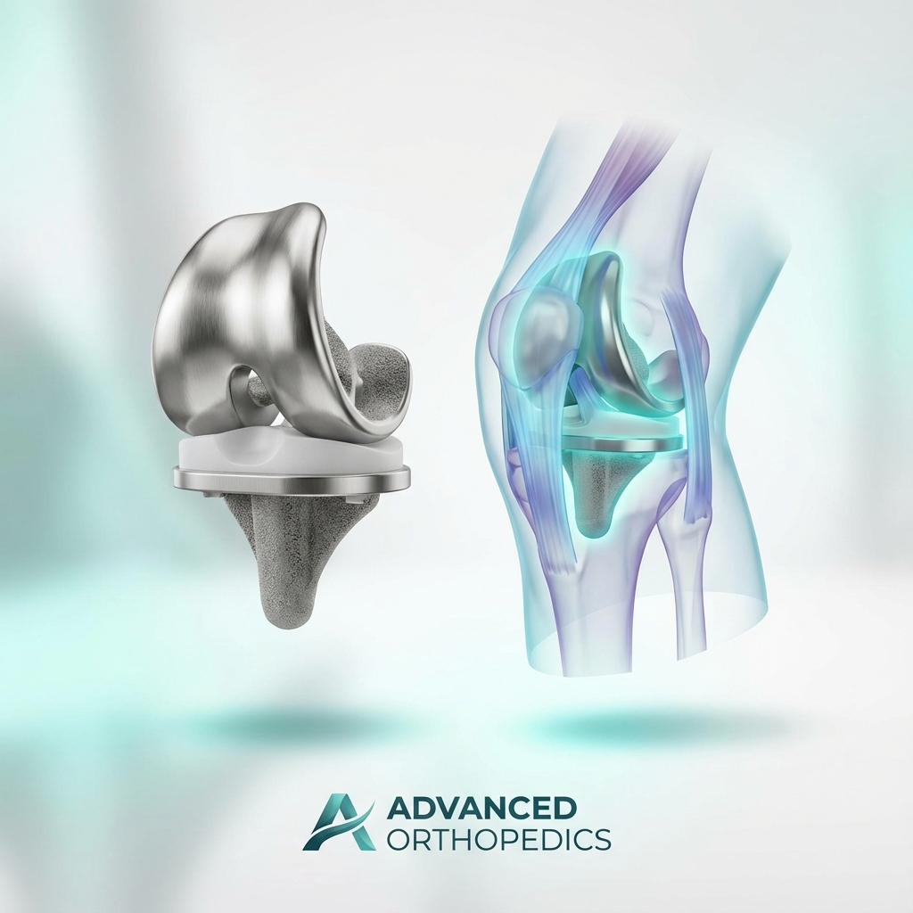
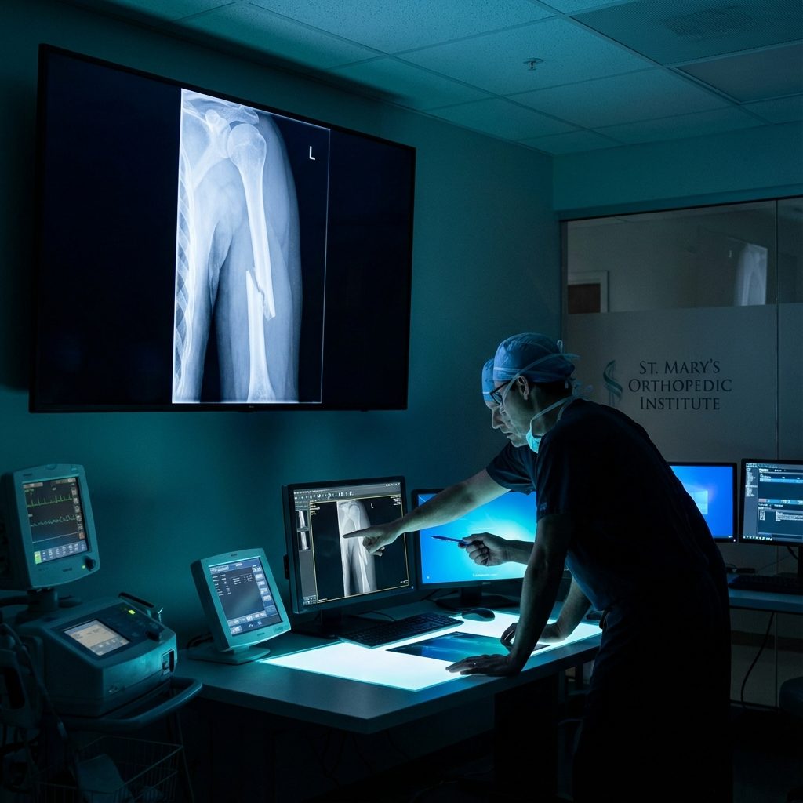

Hizmetlerimiz
İleri teknoloji ve uzman tecrübe ile ortopedik çözümler

Microcerrahi
Hassas dokuların mikroskop altında onarımı ve mikrocerrahi gerektiren işlemler.
Detaylı Bilgi

Spor yaralanmaları
Diz, omuz ve ayak bileği spor yaralanmalarında modern tedavi teknikleri.
Detaylı Bilgi
Diz ve omuz artroskopisi
Kapalı cerrahi yöntemlerle menisküs ve bağ yırtıklarının hızlı tedavisi.
Detaylı Bilgi


Ortopedik Travma tedavisi
Kırıklar ve kompleks ortopedik yaralanmalarda cerrahi çözümler.
Detaylı Bilgi